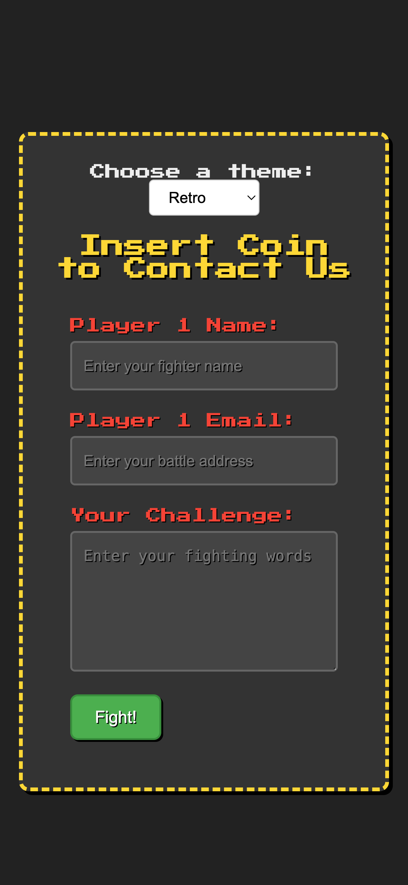
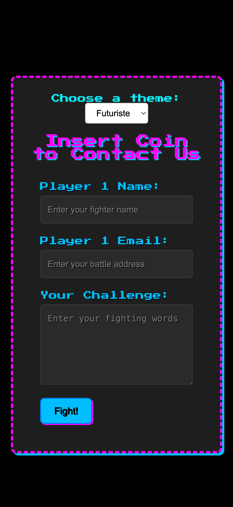

Thank you for purchasing the Retro Contact Form! Inspired by classic arcade games, this document will guide you through the installation and usage of this fun and nostalgic contact form.
contactform-TF/
└── documentation/
├── flat.html
├── minimal.html
├── modern.html
├── retro.html
├── sophisticated.html
└── preview/
├── To install the Retro Contact Form, simply include the contact-form-retro.html, contact-form-retro.css, and contact-form-retro.js files in your HTML project. Important: Ensure you include the 'Press Start 2P' font from Google Fonts (or another source) in the <head> of your HTML file for the intended retro look.
Here's a visual representation of the required files:
 
<head>
<link rel="stylesheet" href="path/to/contact-form-retro.css">
<link rel="preconnect" href="https://fonts.googleapis.com">
<link rel="preconnect" href="https://fonts.gstatic.com" crossorigin>
<link href="https://fonts.googleapis.com/css2?family=Press+Start+2P&display=swap" rel="stylesheet">
</head>
Copy the HTML code from contact-form-retro.html into the desired location in your website's HTML structure. Make sure to link the contact-form-retro.css file in the <head> section and include the contact-form-retro.js file before the closing <body> tag.
<body>
<div class="retro-container">
<h2 class="retro-title">Insert Coin</h2>
<form class="contact-form retro" action="#" method="POST" novalidate>
<div class="form-group">
<label for="name-retro" class="retro-label">Player 1 Name:</label>
<input type="text" id="name-retro" name="name" required aria-required="true" placeholder="Enter your name">
<span class="validation-icon success"><svg ...></svg></span>
<span class="validation-icon error"><svg ...></svg></span>
</div>
<div class="form-group">
<label for="email-retro" class="retro-label">Continue? Email:</label>
<input type="email" id="email-retro" name="email" required aria-required="true" placeholder="Enter your email">
<span class="validation-icon success"><svg ...></svg></span>
<span class="validation-icon error"><svg ...></svg></span>
</div>
<div class="form-group">
<label for="message-retro" class="retro-label">Your Quest:</label>
<textarea id="message-retro" name="message" rows="5" required aria-required="true" placeholder="Enter your message"></textarea>
<span class="validation-icon success"><svg ...></svg></span>
<span class="validation-icon error"><svg ...></svg></span>
</div>
<button type="submit" class="retro-button">Start!</button>
</form>
</div>
<script src="path/to/contact-form-retro.js"></script>
</body>
The Retro Contact Form brings a fun, arcade-inspired aesthetic to your website. You can customize its appearance by modifying the CSS rules in the contact-form-retro.css file. Here's how to adjust key visual elements:
Modify the following CSS properties to personalize the color scheme of the form:
background-color property of the body for the overall page background and the background-color of the .retro-container for the form's main background.
body {
background-color: #222; /* Default dark arcade background */
/* For a different dark color: */
/* background-color: #111; */
}
.retro-container {
background-color: #333; /* Default container background */
/* For a lighter gray: */
/* background-color: #555; */
}
border-color property of the .retro-container. The default is a flashy yellow (#fdd835).
.retro-container {
border-color: #fdd835; /* Default yellow */
/* For a retro blue: */
/* border-color: #29b6f6; */
}
color property of the .retro-title. The default is yellow (#fdd835).
.retro-title {
color: #fdd835; /* Default yellow title */
/* For a retro green title: */
/* color: #aeea00; */
}
color property of the .retro-label. The default is red (#f44336).
.retro-label {
color: #f44336; /* Default red labels */
/* For a retro orange label: */
/* color: #ff9800; */
}
background-color and border-color of the .contact-form.retro input and .contact-form.retro textarea rules.
.contact-form.retro input[type="text"],
.contact-form.retro input[type="email"],
.contact-form.retro textarea {
background-color: #444; /* Default dark gray */
border-color: #666; /* Default gray border */
/* For lighter fields with a blue border: */
/* background-color: #777; */
/* border-color: #29b6f6; */
}
background-color and border-color of the .retro-button rule. The default is a green "Start" button.
.retro-button {
background-color: #4caf50; /* Default green */
border-color: #388e3c; /* Default dark green border */
/* For a retro blue button: */
/* background-color: #29b6f6; */
/* border-color: #03a9f4; */
}
color property of the .contact-form.retro .validation-icon.success (default: #fdd835 - yellow) and .contact-form.retro .validation-icon.error (default: #f44336 - red) rules.
.contact-form.retro .validation-icon.success {
color: #fdd835; /* Default yellow */
/* For a green success icon: */
/* color: #4caf50; */
}
.contact-form.retro .validation-icon.error {
color: #f44336; /* Default red */
/* For an orange error icon: */
/* color: #ff9800; */
}
border-color and background-color of the .contact-form.retro input.is-invalid and .contact-form.retro textarea.is-invalid rules.
.contact-form.retro input.is-invalid,
.contact-form.retro textarea.is-invalid {
border-color: #f44336; /* Default red border */
background-color: #555; /* Default slightly lighter gray */
/* For a bright red border and darker background: */
/* border-color: #ff0000; */
/* background-color: #333; */
}
color property of the .contact-form.retro .error-message rule. The default is red (#f44336).
.contact-form.retro .error-message {
color: #f44336; /* Default red */
/* For a yellow error message: */
/* color: #fdd835; */
}
The retro style heavily relies on the 'Press Start 2P' font. Ensure this font is correctly linked in your HTML's <head>. You can adjust the font-size in the CSS rules for different elements if needed.
Adjust the size and spacing of the form elements by modifying properties like max-width, padding, and margin in the CSS rules for the respective elements (.contact-form.retro, .form-group, input, textarea, .retro-button, .retro-container). The principles are similar to those described in the Minimal style documentation.
As with the other styles, you can use the .d-none utility class from common.css to hide optional fields by adding it to the .form-group of the field in your HTML. Ensure that common.css is linked in the <head> of your HTML file.
The text for the labels and the submit button can be directly changed within the contact-form-retro.html file by editing the text content of the <label> and <button> elements. You can also customize the title in the <h2 class="retro-title"> tag.
Important: This contact form provides the front-end structure and client-side validation only. To handle the form submission (sending emails, storing data), you will need to integrate a backend solution using a server-side language (like PHP, Node.js, Python) or a third-party service (like Formspree, Netlify Forms).
You would typically create a PHP script to handle the form submission when the user clicks "Start!". The action attribute of the <form> tag would point to this PHP script.
<form class="contact-form retro" action="process_form.php" method="POST" novalidate>
<!-- ... form fields ... -->
<button type="submit" class="retro-button">Start!</button>
</form>
Your process_form.php file would then handle the data submitted via the $_POST superglobal, perform server-side validation, and send the email.
Formspree is a service that allows you to receive emails from your HTML forms without writing any backend code.
action attribute of your HTML form with this URL.
<form class="contact-form retro" action="https://formspree.io/f/your_form_endpoint" method="POST" novalidate>
<!-- ... form fields ... -->
<button type="submit" class="retro-button">Start!</button>
</form>
Formspree can also handle basic spam protection and email notifications.
Remember that client-side validation (provided by the JavaScript) is for user convenience. You must implement server-side validation to protect your website from malicious input and ensure data integrity.
To translate the form labels and the button text, you will need to modify the text content directly in the contact-form-retro.html file.
Ensure sufficient color contrast for readability, especially with the retro color scheme. Use the <label> elements correctly associated with their inputs. Focus styles are provided in the CSS for keyboard navigation.
The form is designed to be lightweight, but the inclusion of the 'Press Start 2P' font might add a small delay in loading. Consider optimizing font loading if performance is critical.
For any questions or issues, please refer to the ThemeForest support section for this item.
Game Over! Thanks for playing (purchasing)!